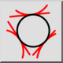

3 érintő
Eszköztár / ikon:


Menü: Rajzolás > Kör > 3 érintő
Rövidítés: C, T, 3
Parancsok: circletangent3 | ct3
Ez egy automatikus fordítás.
Eszköztár / ikon:


Olyan kört rajzol, amely három elemhez érintőleges.